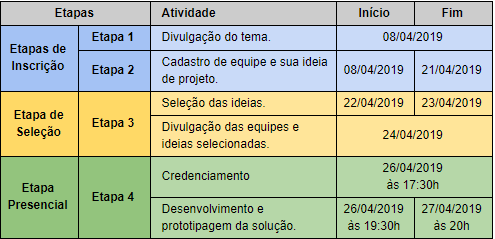
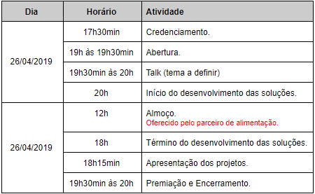

Etapas e Calendário
Este evento contará com 4 (quatro) etapas distintas, cada uma contendo suas respectivas atividades e calendário, conforme
o quadro abaixo.

As etapas de 1 e 2 ocorrerão de forma online; a etapa 3 trata-se de uma etapa eliminatória; e a etapa 4,
que é a etapa presencial com início no dia 26/04/2019, trata-se de uma etapa classificatória.
Etapa de Inscrição - Online
Formulário de Inscrição
As equipes deverão cadastrar suas ideias através do
site do evento. Após a leitura do regulamento,
deverão preencher o formulário disponível, atentando aos campos obrigatórios.
Categoria
Campo obrigatório |
A categoria a qual a equipe se encaixa. |
Nome da equipe
Campo obrigatório |
O nome da equipe. |
Ideia do projeto
Campo obrigatório |
Descreva brevemente, mas com clareza, a ideia de projeto da equipe. |
Qual problema você está solucionando?
Campo obrigatório |
Descreva qual problema a equipe propõe solucionar, dentro do tema proposto.
|
Membros da equipe
Nome, telefone, email, curso |
Quem são as pessoas que compõem a equipe. São obrigatórios, pelo menos, 3 (três) membros em cada
equipe e, no máximo, 5 (cinco) membros. |
Etapa de seleção - Eliminatória
Serão selecionadas até 15 (quinze) propostas para a etapa presencial conforme os critérios de seleção estabelecidos
neste regulamento. Os projetos selecionados serão divulgados através do site. Os alunos devem estar atentos
aos canais de comunicação da Unigranrio para eventuais informações importantes.
Critérios de Seleção
Serão avaliadas apenas os projetos que preencherem todos os campos obrigatórios do formulário de inscrição.
Assim, para esta etapa serão levados em conta os critérios:
| Aderência |
Nesse critério será avaliado se o projeto apresentado é aderente à temática do evento. |
| Relevância |
O grau de magnitude do problema apresentado, bem como de impacto da solução proposta. |
Etapa Presencial - Classificatória
Agenda de Trabalho
Teremos a seguinte programação de trabalho, com início às 17h30min do dia 23/11/2018 e término às 20h do dia
24/11/2018:

Haverá alimentação disponível durante o evento com café, água e suco para os participantes.
Uso de equipamentos
Atenção: durante a etapa presencial, os participantes do evento devem trazer seus próprios equipamentos e
dispositivos para desenvolver e prototipar. Será utilizado a política Bring your own device (BYOD) - (do
inglês: traga seu próprio dispositivo - laptops, tablets, smartphones, placas, breadboards, cabos e etc).
Incluindo extensões e adaptadores (se necessário).
Ambiente de trabalho
A Unigranrio irá fornecer o espaço confortável para os participantes, incluindo mesas, cadeiras, energia elétrica,
Internet de qualidade e papel A3. Será fornecido também lanche e estacionamento (xx vagas).
Apresentação dos Projetos
A apresentação dos projetos para a banca avaliadora será baseada no modelo pitch (uma apresentação cativante,
rápida e sucinta). É ideal que o grupo mostre a importância e viabilidade da solução proposta. O tempo destinado
para a apresentação do pitch será de 5 (cinco) minutos por grupo. A banca avaliadora terá 2 (dois) minutos
para realizar perguntas e o grupo terá 2 (dois) minutos para responder.
Critérios de Avaliação
A banca avaliadora será composta por convidados de renome da região, ligados à inovação, bem como
forte atuação no mercado tecnológico. Estes avaliadores serão divulgados no site do evento.
Os avaliadores julgarão os projetos em função dos seguintes critérios classificatórios:
| Qualidade da Solução |
Serão avaliadas as características gerais da solução proposta e qualidade do protótipo desenvolvido. |
| Proposta de Valor |
Será avaliado se os benefícios da solução estão bem definidos e são relevantes para os atores envolvidos. |
| Mercado |
Será avaliado se a proposta apresenta diferenciais relevantes, com potencial de inserção no mercado. |
Atenção: caso se identifique que algum projeto foi desenvolvido, bem como prototipado, fora da etapa presencial, a equipe será desclassificada e não poderá concorrer à premiação.